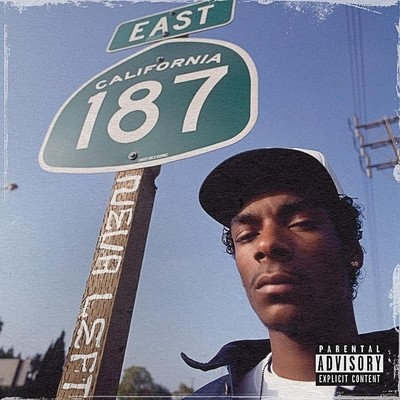
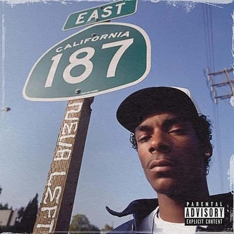

West Coast rap legend Snoop Dogg has come a long way since being discovered by Dr. Dre in the early 1990.
As impressive as he was when guesting on Dre’s The Chronic in 1992, few could have guessed
he’d go on to global fame, tens of millions of record sales, and a career in movies and TV. And that’s only part
of the story, from battles with the law to reinvention as a reggae artist. Snoop’s story isn’t finished yet, 4
and who knows what this Long Beach native will do next?


 
